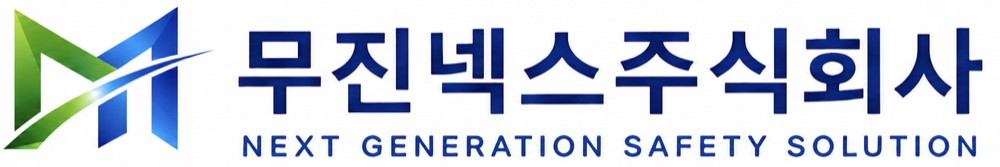

메뉴 ☰
홈
서비스 소개
법정 소독 기준
관리 절차
체크 · 예상 견적
상담 · 문의
HOME
/ 체크 · 예상 견적
QUICK CHECK & ESTIMATE
체크 · 예상 견적
대상과 필요한 서비스를 체크하고 맞춤 상담으로 이어갈 수 있어요.
01
대상을 알려주세요
대상유형
식당 · 카페 · 매장
주택 · 빌라 · 원룸
의료 · 학교 · 공공시설
HACCP업체
기타 공간
실제 작업할 구역 면적 (평)
전체 매장이 아닌 실제 관리할 구역 기준 · 1평 ≈ 3.3㎡
실제 작업이 필요한 범위
주방·창고 등 일부 구역
공간 전체
상담 후 확인
최종 금액은 실제 작업 구역과 작업량을 중심으로 협의합니다.
02
필요한 서비스를 골라주세요
해충 방제
법정 소독
모래소독
위생용품 렌탈
관리 방식
월 정기관리 기본 (12개월)
월 장비추가 정기관리 기본 (24개월)
1회 방제관리 (상황에 맞게 방역)
03
발견한 해충과 상태는 어떤가요?
바퀴벌레
개미
비행해충
쥐
잘 모르겠어요
발생 정도
가끔 발견 · 예방 관리
반복 발견
여러 곳에서 자주 발견
판단이 어려워요
낮에도 발견
주로 야간에 발견
배설물 · 흔적 발견
외부 유입 의심
반려동물 있음
식품 취급 공간
예상 견적 확인하기 ↗